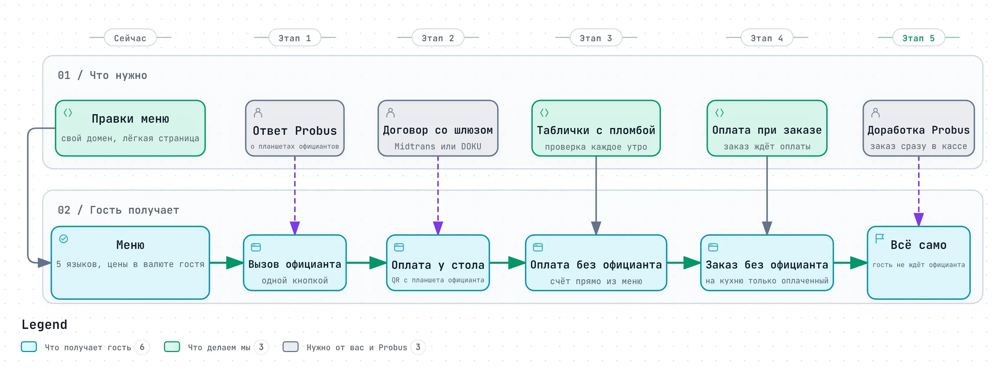

Пять этапов
Сейчас: Меню готово
Пять языков, цены в валюте гостя. Работает сейчас.
Этап 1: Вызов официанта
Гость зовёт официанта или просит счёт одной кнопкой. Сигнал приходит на планшет официанта. Денег этот этап не касается.
Этап 2: Оплата у стола
Официант показывает QR на планшете, гость платит своим телефоном через QRIS или картой. Счёт можно поделить.
Этап 3: Оплата без официанта
Гость оплачивает счёт прямо из меню и не ждёт официанта.
Этап 4: Заказ без официанта
Гость заказывает из меню. Заказ уходит на кухню только после оплаты.
Этап 5: Всё само цель
Заказ сразу попадает в кассу и на кухню, оплата сама закрывает чек. Для этого нужна доработка от Probus.
Каждый следующий этап начинаем, когда предыдущий две-четыре недели работает без сбоев. Любой этап выключается одной кнопкой, и ресторан возвращается к прежней работе.
Как деньги остаются под контролем
- Оплата засчитывается только после подтверждения банка: стол на планшете официанта становится зелёным. Скриншоты и слова гостя не в счёт.
- Каждый вечер платежи сверяются с кассой PRESTO.
- Данные карт к нам не попадают: гость платит на странице платёжного сервиса.
- Сначала проверяем всё в тестовом режиме, потом запускаем на одной точке с лимитом на каждый платёж.
- Неоплаченный заказ из меню на кухню не уходит.
Что нужно от вас
- Уточнить у Probus, какая касса стоит в ресторане и можно ли подключить к ней наше меню. Список вопросов есть в подробном плане.
- Заключить договор с платёжным сервисом Midtrans или DOKU на компанию ресторана.
- Спросить бухгалтера, как учитывать оплаты из приложения.
- Решить: хватит ли планшетов официантов или нужны ещё их телефоны, какие лимиты сумм поставить на первые недели, какие способы оплаты дать гостю в конце.
Схема плана

Подробный план
Касса Probus, оплата, вызов официанта, риски и защита, проверки перед запуском.